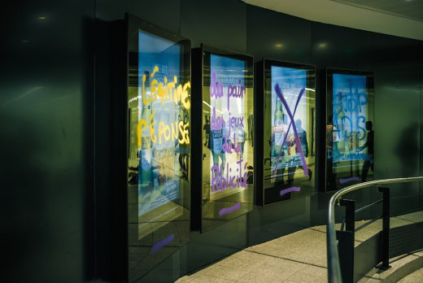

| |
Site dédié à la publication d'informations communiquées par le Collectif des déboulonneurs. En aucun cas ce site n'appelle à des actions illégales. | |
 |
||
|
Accueil du site > Lille > [Lille] 100 panneaux pour la 100e action !
RDV le DIMANCHE 25 MARS à 14h, place du Marché aux chevauxNous invitons tous-tes les lillois-es à participer à la plus grande action antipub jamais tentée à Lille, le barbouillage de 100 panneaux de publicité ! Cette 100e action du Collectif antipub des Déboulonneurs se déroulera à 14h, lors de la Journée mondiale contre la publicité, le DIMANCHE 25 MARS. A l’occasion de ce triste anniversaire (nous aimerions ne plus devoir lutter contre la publicité et avoir une ville délivrée de ce danger), nous aurons la joie d’entrer une nouvelle fois en désobéissance civile, de façon non-violente, assumée et conviviale. Depuis 2006, vous nous avez accompagnés, suivis de près ou de loin, soutenus. S’il n’y avait qu’une action à laquelle nous vous demandons de participer, ce serait celle-là ! MONTRONS A MARTINE AUBRY QUE NOUS VOULONS UNE VILLE SANS PUB ! 
Amenez votre bonne humeur, vos ami-es, votre famille, vos enfants, vos voisins, vos collègues, vos instruments et s’il le faut votre parapluie ! Il devrait y avoir 5 groupes et donc 5 parcours, dont au moins 1 à vélo, et 1 parcours accessible aux personnes qui ont du mal à se déplacer. RDV le DIMANCHE 25 MARS à 14h, place du Marché aux chevaux, devant le Café Citoyen, où sont nés les Déboulonneurs il y a 12 ans. Un grand merci à toutes et à tous, et à très bientôt, Le Collectif des Déboulonneurs de Lille PS : Si vous souhaitez barbouiller, une petite formation est nécessaire pour parer aux risques éventuels. Contactez-nous AVANT l’action pour en parler, et au besoin, vous former. Réveillez le ou la désobéissant-e qui sommeille en vous ! Contact : deboulonneurs_lille[a]no-log.org (remplacer [a] par @) ===============================Les déboulonneurs lillois en chiffres :100 actions 88 barbouillages 3 démontages de panneaux Au moins 30 barbouilleurs-ses de Lille et au moins 15 venus d’autres régions 15 arrestations 2 gardes-à-vue 2 procès Des milliers de spectateurs-trices |
|
Site utilisant SPIP - Hébergement Ouvaton
|